Relativen Nullpunkt fixieren
Werkzeugleiste / Symbol:

Menü: Fang - Relativen Nullpunkt fixieren
Tastenkürzel: R, L
Kommandos: lockrelativezero | rl
Beschreibung:
Wenn dieser Schalter aktiviert ist, wird der relative Nullpunkt an der
aktuellen Stelle blockiert bis er
manuell
verschoben wird.